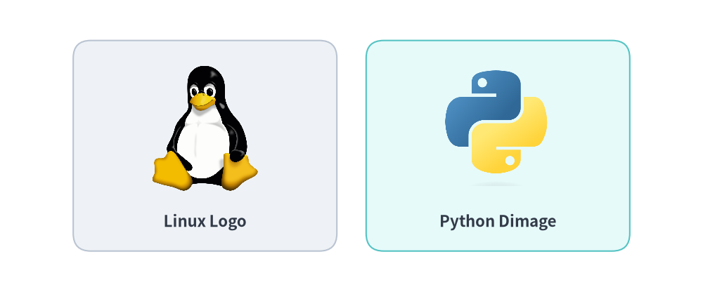
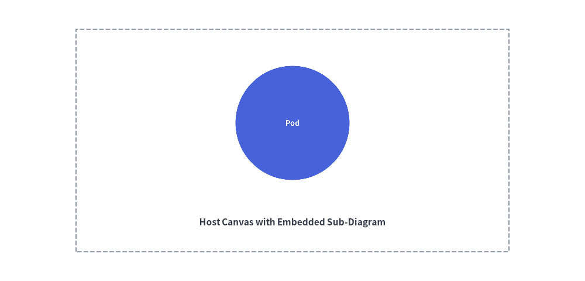

Images & Dimage
Drawlib allows embedding external bitmap and vector images directly into your illustrations.
You can combine raster graphics (company logos, cloud service icons, application screenshots) with vector shapes and annotations, or manipulate graphics programmatically using the in-memory Dimage model.
1. Overview of Image Placement

2. Placing Images (image)
The image() function places an image on the canvas at coordinate xy, automatically preserving its original aspect ratio.
image(
xy: tuple[float, float],
width: float,
image: str | Image.Image | Dimage,
*,
style: Style | None = None,
)
Parameter Reference:
xy: Center coordinate anchor point(x, y).width: Width of the image in canvas units. The height scales proportionally.image: File path (.png,.jpg,.svg), PILImageinstance, orDimageobject.style: Optional styling controlling rotation (angle), opacity (alpha), or alignment (halign,valign).
Changing Anchor Alignment
By default, (x, y) anchors the center of the image. To position an image by its bottom-left corner:
from drawlib.styles import Styles
bottom_left_style = Styles.PrimaryBold.patch(halign="left", valign="bottom")
image((10, 10), width=25, image="logo.png", style=bottom_left_style)
3. In-Memory Image Manipulation (Dimage)
The Dimage class wraps a PIL Image object with Drawlib transformation utilities:
from drawlib.images import Dimage
# 1. Load from file
dimg = Dimage("assets/screenshot.png")
# 2. Inspect dimensions
width, height = dimg.get_image_size()
# 3. Apply color tinting
# Replaces non-transparent pixels with an RGB tint
tinted_dimg = dimg.fill((52, 152, 219))
# 4. Clone instance
copy_dimg = dimg.copy()
4. Dynamic In-Memory Rendering (get_dimage_from_code)
Drawlib can execute a snippet of Drawlib drawing code dynamically and return the rendered result directly as an in-memory Dimage.
This enables recursive nesting and reusable sub-diagram templates:
from drawlib.canvas import save, setup
from drawlib.images import get_dimage_from_code, image
from drawlib.shapes import rectangle
from drawlib.styles import Styles
from drawlib.text import text
# 1. Render a sub-component in-memory
sub_code = """
from drawlib.canvas import save, setup
from drawlib.shapes import circle
from drawlib.styles import Styles
setup(width=40, height=40)
circle((20, 20), radius=15, style=Styles.PrimaryFlat, text="Pod", text_style=Styles.WhiteBold.patch(text_size=36))
save()
"""
sub_diagram = get_dimage_from_code(sub_code)
# 2. Embed the sub-diagram onto the primary canvas
setup(width=100, height=50)
rectangle((50, 25), width=70, height=36, style=Styles.MutedDashed)
image((50, 26), width=28, image=sub_diagram)
text((50, 11), "Host Canvas with Embedded Sub-Diagram", style=Styles.DarkBold)
save()
